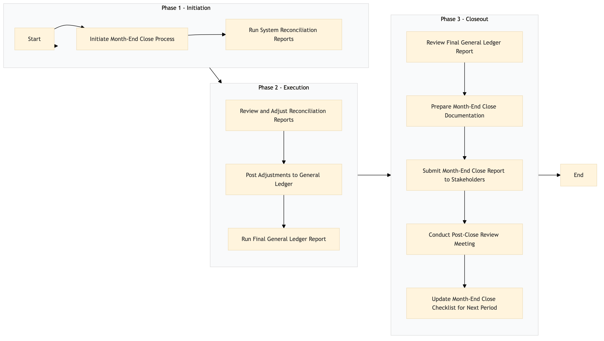

| Role | Steps |
|---|---|
| Finance Manager | 1.1 3.1 3.3 3.4 3.5 |
| Accountant | 1.2 2.1 2.2 2.3 3.2 |
| Step | Name | Role | System | Input | Output | KPI | Dec? | Exc? | Pain Point / Risk |
|---|---|---|---|---|---|---|---|---|---|
| 1.1 | Initiate Month-End Close Process | Finance Manager | Oracle OPERA Cloud, SAP S/4HANA | Month-end close checklist | Started month-end close process log | Less than 10 minutes | N | N | Ensuring all systems are up-to-date and synchronized. |
| 1.2 | Run System Reconciliation Reports | Accountant | Oracle OPERA Cloud, IDeaS G3 RMS, SynXis CRS | Reconciliation scripts | Reconciliation report | Less than 1 hour | Y | N | Handling discrepancies between systems. |
| 2.1 | Review and Adjust Reconciliation Reports | Accountant | Microsoft Excel, SAP S/4HANA | Reconciliation report | Adjusted reconciliation report | Less than 2 hours | Y | N | Identifying and resolving complex discrepancies. |
| 2.2 | Post Adjustments to General Ledger | Accountant | SAP S/4HANA | Adjusted reconciliation report | Posted adjustments log | Less than 30 minutes | N | Y | Incorrect posting leading to financial misstatements. |
| 2.3 | Run Final General Ledger Report | Accountant | SAP S/4HANA, Microsoft Power BI | Posted adjustments log | Final General Ledger report | Less than 1 hour | N | Y | Generating accurate and complete financial reports. |
| 3.1 | Review Final General Ledger Report | Finance Manager | Microsoft Power BI | Final General Ledger report | Reviewed report log | Less than 2 hours | Y | N | Identifying any last-minute errors or discrepancies. |
| 3.2 | Prepare Month-End Close Documentation | Accountant | Microsoft Office Suite | Reviewed report log, reconciliation reports | Month-end close documentation | Less than 1 hour | N | Y | Ensuring all required documents are complete and accurate. |
| 3.3 | Submit Month-End Close Report to Stakeholders | Finance Manager | Email, SharePoint | Month-end close documentation | Submitted report confirmation | Less than 30 minutes | N | Y | Ensuring timely submission to meet deadlines. |
| 3.4 | Conduct Post-Close Review Meeting | Finance Manager, Accountant | Microsoft Teams, Zoom | Month-end close documentation | Post-close review meeting minutes | Less than 1 hour | N | Y | Discussing and addressing any issues that arose during the month-end close. |
| 3.5 | Update Month-End Close Checklist for Next Period | Finance Manager | Microsoft Office Suite | Post-close review meeting minutes | Updated month-end close checklist | Less than 30 minutes | N | Y | Ensuring the checklist remains current and comprehensive. |
The General Ledger Month-End Close process at a Marriott full-service hotel ensures accurate financial reporting by consolidating and reconciling all financial transactions from various systems.